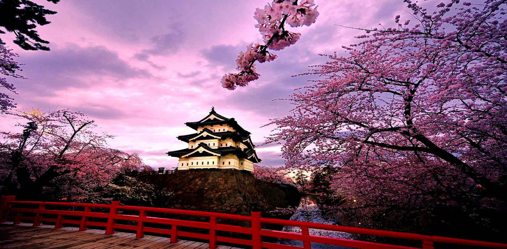

- 
-

JAPÓN UN MUNDO MODERNO
Japón es un país insular del este de Asia. Está ubicado entre el océano Pacífico y el mar del Japón, al este de China, Rusia y la península de Corea. Conocido como «La tierra del sol naciente», es una de las mayores potencias económicas del mundo.